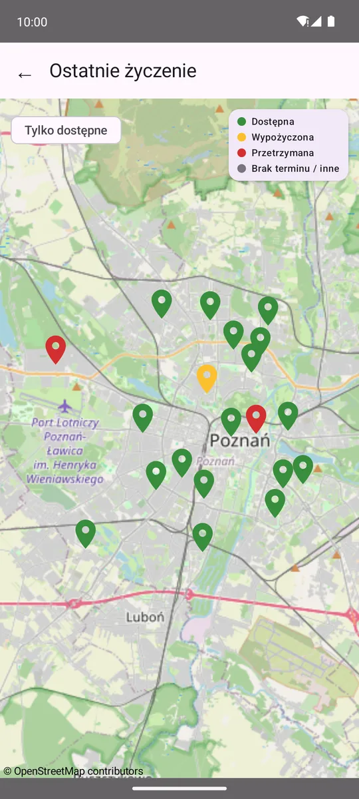
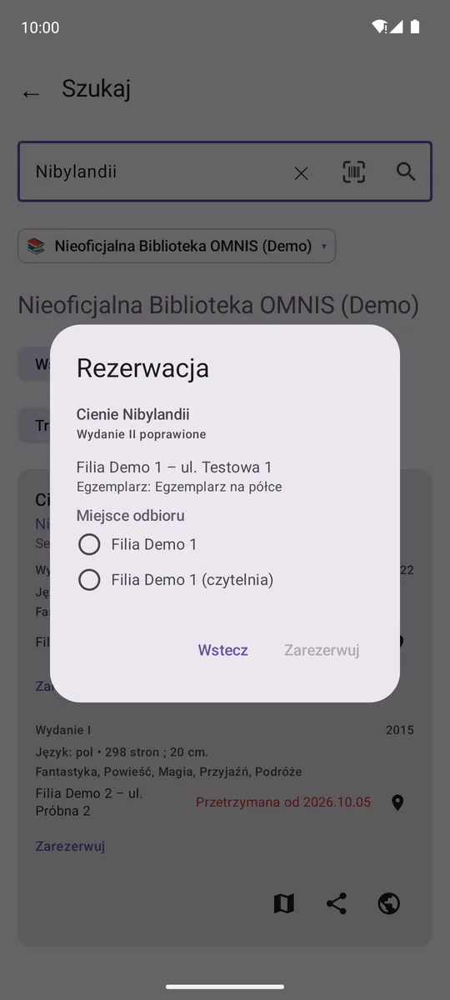
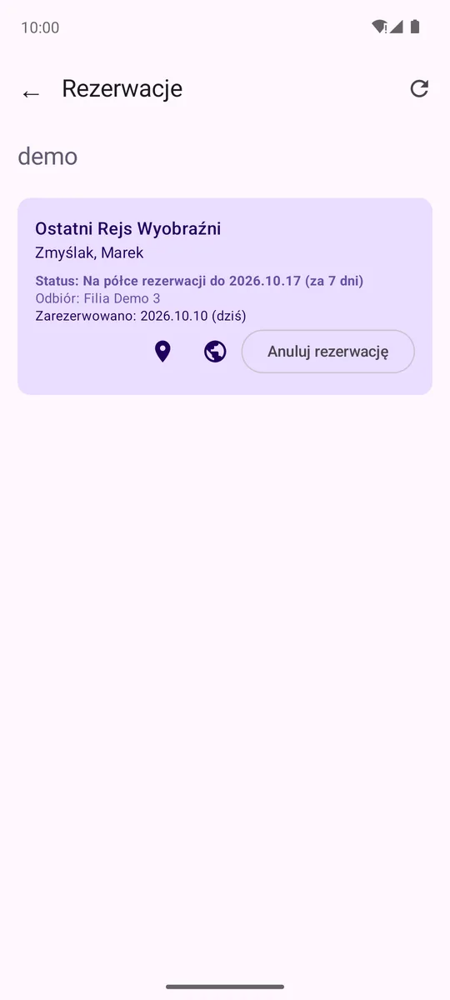
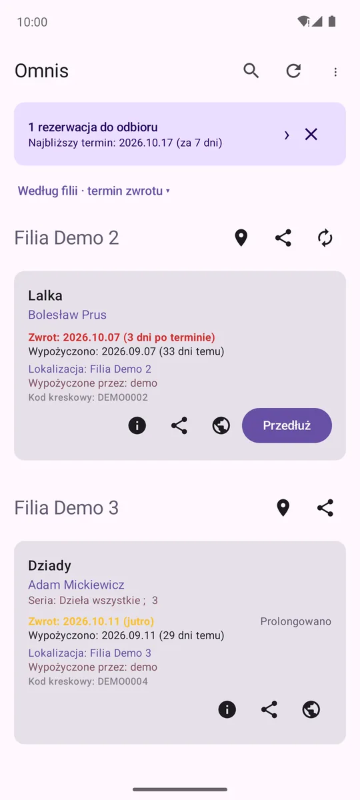
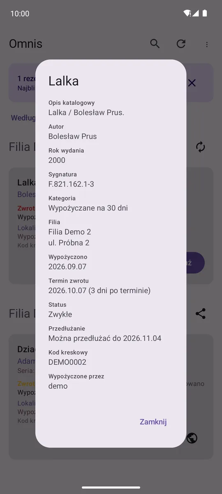
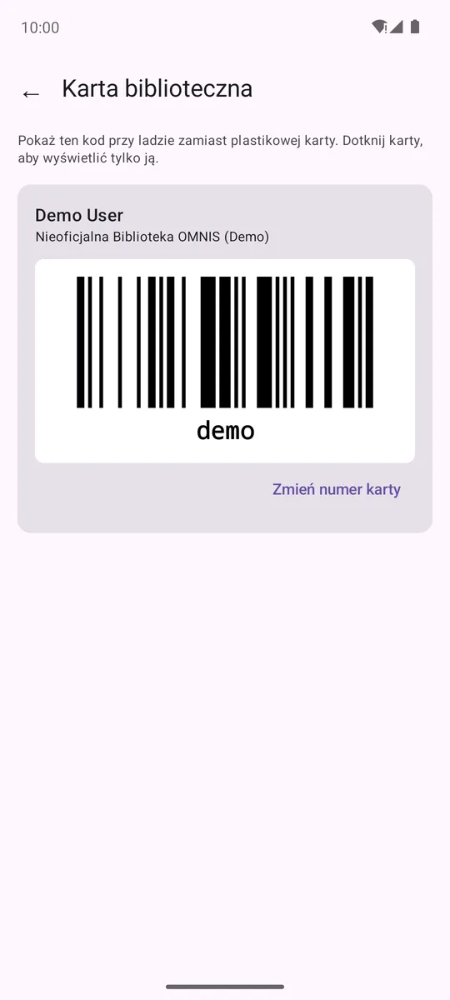
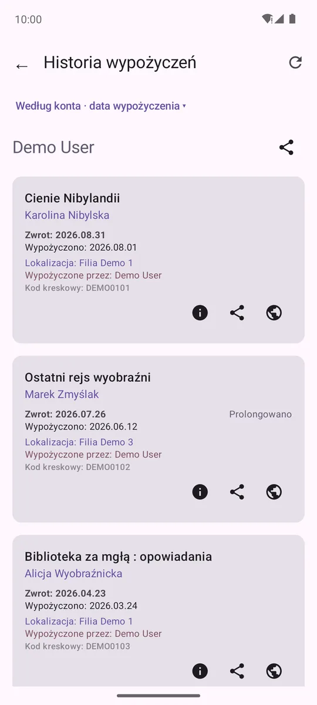

Jak to wygląda
Zrzuty z konta demonstracyjnego; mapa filii — na żywo z katalogu Biblioteki Raczyńskich w Poznaniu.







Co potrafi
Wypożyczenia
- Wiele kont w wielu bibliotekach naraz — np. całej rodziny
- Kolorowe terminy zwrotu: zaległe, kończące się, spokojne
- Przedłużanie jednej książki albo całej grupy jednym dotknięciem
- Grupowanie według osoby lub filii, kilka sposobów sortowania
- Adres filii z nawigacją, historia wypożyczeń
Wyszukiwarka
- Działa bez konta, w dowolnej z 55 bibliotek, także w kilku naraz
- Wszystkie wydania tytułu i dostępność w każdej filii
- Termin zwrotu wypożyczonych egzemplarzy
- Filtr typu (książka, audiobook, film…), wyszukiwanie po autorze i serii
- Mapa filii i skaner kodu ISBN z aparatu
Rezerwacje i karta
- Rezerwacja z wyników wyszukiwania, z wyborem miejsca odbioru
- Lista rezerwacji wszystkich kont i ich anulowanie
- Baner na ekranie głównym, gdy książka czeka na odbiór, z terminem odbioru
- Karta biblioteczna z kodem kreskowym — do pokazania przy ladzie
Prywatność
- Hasła tylko na Twoim telefonie, zaszyfrowane
- Aplikacja łączy się z serwerem Twojej biblioteki — autor nie ma żadnego serwera
- Bez reklam i śledzenia, kod otwarty
- Polityka prywatności
Obsługiwane biblioteki
55 bibliotek: Biblioteka Raczyńskich, Biblioteka Narodowa, biblioteki uniwersyteckie (m.in. UAM, UJ, UW, UWr, PW, UMCS) oraz wiele bibliotek publicznych i powiatowych w sieci OMNIS. Pełna lista. Brakuje Twojej? Jeśli ma katalog Primo z logowaniem loginem i hasłem, dodasz ją sam — wklejając link do jej katalogu. Możesz też dać znać, a trafi na listę.
Dołącz do testów
Aplikacja jest w fazie testów w Google Play. Żeby trafiła do wszystkich, Google wymaga grupy testerów korzystających z niej przez co najmniej dwa tygodnie — każda osoba się liczy.
- Zapisz się do testów tym samym kontem Google, którego używasz w telefonie.
- Zainstaluj aplikację z Google Play i dodaj swoje konto biblioteczne — albo włącz tryb demo w ustawieniach, żeby rozejrzeć się bez konta.
- Nie odinstalowuj jej przez najbliższe 14 dni. Uwagi i błędy zgłaszaj na GitHubie.